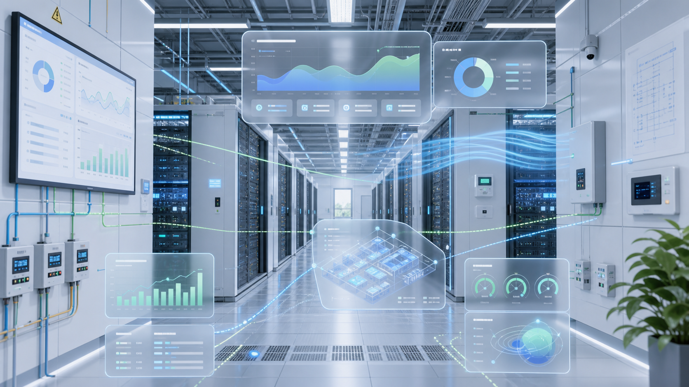
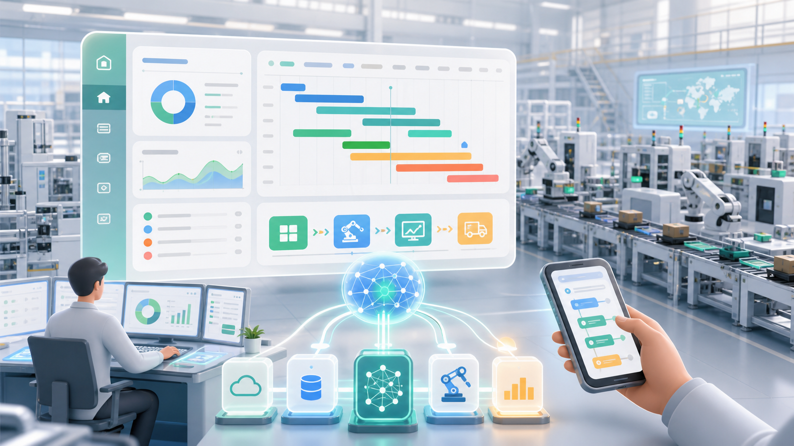

Chongqing University of Education
Computer Science and Technology; ranked first in class and second at university level; first- and second-class university scholarships.
Industrial Software / AI Integration / Data Center Energy
Computer Science and Technology graduate with 3 years of enterprise industrial software experience across MES, ERP, EMS, BMS, HMI, AI knowledge retrieval, and face recognition systems.

I worked at wonthe Information Technology (Shanghai) for three years, focusing on manufacturing MES/EMS, ERP, AI knowledge retrieval, face recognition, data center BMS/HMI, and energy management systems. My work spans business requirements, module development, on-site integration, data acquisition, reports, and visualization.
Computer Science and Technology; ranked first in class and second at university level; first- and second-class university scholarships.
3 years of industrial software, enterprise systems, SCADA/HMI, energy management, and AI application development.
Focused on real project delivery, cross-system integration, on-site problem solving, and practical AI adoption.

01 / Data Center BMS & Energy
参与 EPMS、CPMS、fitout 核心机房 BMS、HMI 的开发和测试，使用 Schneider PlantSCADA 与 Vijeo（HMIET6700）。独立完成能源管理系统，包括 OPC 数据采集、能源报表和可视化展示。

02 / Manufacturing & AI
参与 MES 开发工作，开发 WAPS 高级排产能力，并参与先正达人脸识别相关功能开发，围绕生产计划、排产逻辑、现场数据、身份识别和业务流程完成系统功能建设。
03 / Face Recognition
参与人脸识别相关业务功能开发，围绕人员身份识别、业务系统联动、现场使用流程和数据记录完善功能闭环。
04 / ERP + AI Knowledge
参与 ERP 部分模块开发，并接入 AI 能力，涉及 RAG、向量数据库、memory、资料检索等能力，用于提升内部知识查询和业务资料获取效率。
05 / EMS & PDA
参与 EMS 约一半模块的开发，并负责 PDA 相关功能建设，覆盖现场移动端数据采集、业务流转和系统联动。
Delivered MES, EMS, ERP, WAPS scheduling, PDA workflows, and enterprise modules for manufacturing and energy scenarios.
Worked with data center BMS, EPMS, CPMS, Schneider PlantSCADA, Vijeo HMI, and on-site commissioning/testing.
Integrated AI-assisted retrieval with RAG, vector databases, memory, and document search for enterprise knowledge workflows.
Built OPC data acquisition, energy reports, visualization dashboards, and management-facing operational views.
本科期间专业成绩班级第一、全校第二，并获得校级一、二等奖学金，能证明持续学习能力和专业基础。
从制造业 MES/EMS 到数据中心 BMS，再到 ERP 与 AI 检索，经历过多个真实业务系统。
独立完成过泰国 DAMAC 数据中心能源管理系统，具备从数据采集到报表展示的闭环能力。
熟练使用 AI，并参与 RAG、向量数据库、memory 等能力接入，能把新技术转化为业务效率。
计算机科学与技术专业，专业成绩班级第一、全校第二，获得校级一、二等奖学金。
Worked on Syngenta MES/WAPS, face recognition, ERP modules, Guangzhou VTR EMS, and PDA systems.
参与泰国 DAMAC 数据中心 BMS/HMI 开发测试，并独立完成能源管理系统。
希望在研究生学习或下一份工作中，将工程经验与 AI、数据系统、智能制造结合得更深入。
Contact